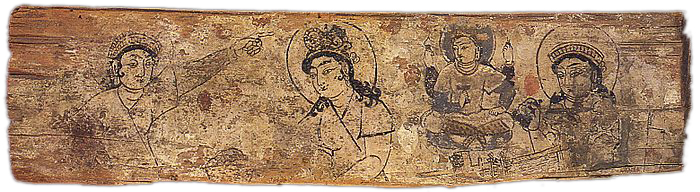
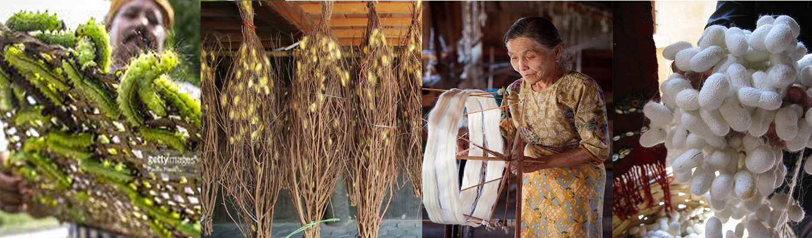

India is the second largest producer of silk in the world. It produces four types of silk - Mulberry, Tasar, Eri & Muga. Jharkhand is the leading producer of Tasar silk in the country. We produced 2004 M.T. Tasar silk in the year 2013-14, for which we got an apreciation letter by member secretary, Central Silk Board. Tasar silk is mainly reared in the forests on Arjuna and Asan trees. The dominant ecorace is DABA. We are also rearing DABA on Sidha trees. In addition to DABA, we have started eco-conservation of Laria ecorace. It is mainly reared on Sal trees which are in abundance in the forests. The technology for ecorace conservation has been developed with the technical support of Central Tasar Research & Training Institute (CTR&TI) Nagri, Ranchi. We have got our Tasar Silk Certified as Organic by an International agency, One Cert USA. Today, we are the sole supplier of certified Organic Tasar Silk in the world. We have planned to achieve a production of 8000 M.T. of Tasar Silk by the end of Xllth plan.
History
According to Confucian text, the discovery of silk production dates to about 2700 BC, although archaeological records point to silk cultivation as early as the Yangshao period (5000 – 3000 BC).[2] By about the first half of the 1st century AD it had reached ancient Khotan,[3] by a series of interactions along the Silk Road. By 140 AD the practice had been established in India.[4] In the 6th century the smuggling of silkworm eggs into the Byzantine Empire led to its establishment in the Mediterranean, remaining a monopoly in the Byzantine Empire for centuries (Byzantine silk). In 1147, during the Second Crusade, Roger II of Sicily (1095–1154) attacked Corinth and Thebes, two important centres of Byzantine silk production, capturing the weavers and their equipment and establishing his own silkworks in Palermo and Calabria,[5] eventually spreading the industry to Western Europe.
Production
Silkworm larvae are fed with mulberry leaves, and, after the fourth moult, they climb a twig placed near them and spin their silken cocoons. This process is achieved by the worm through a dense fluid secreted from its structural glands, resulting in the fibre of the cocoon. The silk is a continuous filament comprising fibroin protein, secreted from two salivary glands in the head of each larva, and a gum called sericin, which cements the filaments. The sericin is removed by placing the cocoons in hot water, which frees the silk filaments and readies them for reeling. This is known as the degumming process.[6] The immersion in hot water also kills the silkworm pupa. Single filaments are combined to form thread, which is drawn under tension through several guides and wound onto reels. The threads may be plied to form yarn. After drying, the raw silk is packed according to quality.
Stages of production
- The silk moth lays thousands of eggs.
- The silk moth eggs hatch to form larvae or caterpillars, known as silkworms.
- The larvae feed on mulberry leaves.
- Having grown and moulted several times, the silkworm extrudes a silk fiber and forms a net to hold itself.
- It swings its head from side to side in a figure '8' distributing the saliva that will form silk.
- The silk solidifies when it contacts the air.
- The silkworm spins approximately one mile of filament and completely encloses itself in a cocoon in about two or three days. The amount of usable quality silk in each cocoon is small. As a result, about 2500 silkworms are required to produce a pound of raw silk.
- The intact cocoons are boiled, killing the silkworm pupa.
- The silk is obtained by brushing the undamaged cocoon to find the outside end of the filament.
- The silk filaments are then wound on a reel. One cocoon contains approximately 1,000 yards of silk filament. The silk at this stage is known as raw silk. One thread comprises up to 48 individual silk filaments